一、毕加索们——从西班牙到西班牙
精神世界中高贵的人物！已从恶魔的手里救出；谁若是永远奋发向上，天使都能够给他救助。——《浮士德》

西班牙 阿尔塔米拉窟壁画（距今约1.8万年）
上帝真的不会掷骰子，所以，玛丽娅绝不是出于偶然与马德林的野牛对视，马赛尔的狗也绝不是在机缘巧合之下重逢“冰河时期的西斯廷”；此后，每每人类回顾历史，阿尔塔米拉与拉斯科便成了印证人类与谷物交易失败的公证者，三万年以来，它们目睹了小麦驯化人类的全过程——作为对于失败者的惩罚；而历史也总是如艺术般戏剧，工业革命孕育了人类摆脱谷物束缚的希望，正如浮士德的灵魂终是归于天国，交易的失败者们也终将挣脱谷物的束缚，赢得他们迟到30000年的奖励；而大局已定胜者已分，公证人们也将慢慢隐去它们旁观者的身份，作为胜利的鉴证登上了历史的舞台。
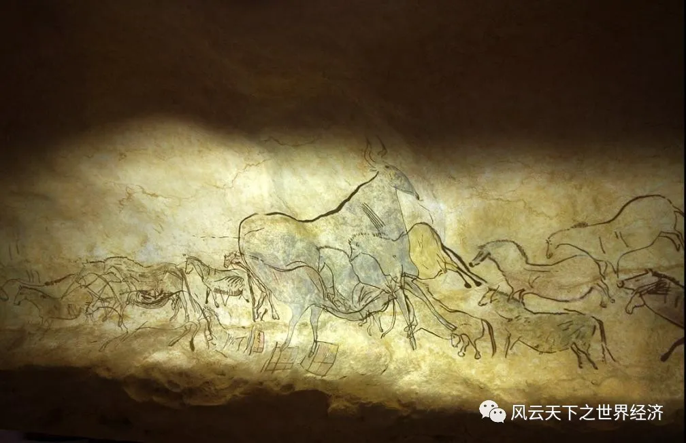
法国 拉斯科洞窟壁画（距今约1.7万年）
1875年，当马尔萨斯陷阱彻底终结，索图乌拉代表人类正式地与公证者之一阿尔塔米拉会晤，虽然过程艰辛情节曲折，但毕加索终是在故乡找到了他在史前的知音们——晚期智人。当人类惊叹于自己的祖先如此丰富的精神世界与如此精湛的绘画技巧，或许此处应该有些思考——如果，我是说如果，没有农业革命，史前毕加索和当代毕加索的三万年鸿沟是否可以一笔勾销？或者可以说，为什么经历了三万年的发展，为什么艺术又重新回到了起点？这绝非“对人类与谷物交易失败的惩罚”那么简单，也就是说，艺术——并非单指绘画——或许对于人类迎接工业革命、促进经济发展也有着不可或缺的作用。
二、柏拉图、卢梭与杰文斯——从文艺到复兴
我爱我师，但我更爱真理。——亚里士多德
或许孔子当年周游列国时再往西一些，亚里士多德或许会更爱自己的老师——毕竟相较于柏拉图，亚里士多德还是更青睐于孔子的观点。
在《政治学》中，亚里士多德明确提到“音乐应该学习，同时为着几个目的，那即是交易、净化。”这里的“净化”，应是指音乐可以净化过度的热情以及“那些受其他情绪影响的人”，它可以使得情绪得以宣泄进而获得心灵上的平衡，营造愉悦的气氛，缓解人的疲惫，并塑造人的性格，使其能对个人感情的喜怒哀乐形成一个正确的感应，并借助这些感情的载体去产生共情，平衡个人情感——与“兴观群怨”何其相似！
而反观柏拉图，他根据优劣将人类的灵魂分为九个等级，哲学是第一级，暴君是最后一级，而可怜的艺术家只能排名第六——毕竟第七第八是工匠与农民！他认为不同于理性的与科学，艺术是一种毒药，一种助长那些纯粹的反复无常的感情的毒药，是与人类灵魂的理性原则背道而驰。由此看来，亚里士多德没有理由不更爱真理。
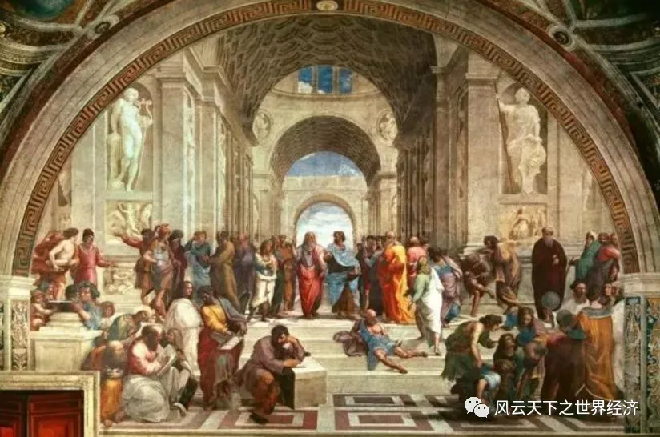
拉斐尔《雅典学院》，中间二人分别为柏拉图和亚里士多德
也就是说，艺术作为文化的一个子域，并非单单只是一件物品，它具有着传递感情的功效——正如菲利普·迪克在《仿生人会梦见电子羊吗》所讲，人类跟仿生人最大的区别在于人类群体具有共情的能力；而艺术品，无论是诗歌、绘画、音乐等，都是感情的载体；虽然亚里士多德和柏拉图对于这种共情力的作用观点想左，但是艺术的载体性是两人的共识。
那么，艺术作为载体，它带来的共情真的是如柏拉图所言，是对“灵魂理性部分的毁灭”吗？目前来看，大家还是采取了亚里士多德的观点，即艺术可以改善人，可以在精神与道德层面促进人的发展。
若是艺术仅仅是促进个人的发展，进而提高生产效率，那么这个观点也未免太过于简单。艺术对于经济的影响远非如此，接下来，就让我们跳过宗教主导下的灰暗中世纪，来看一看文艺复兴后工业革命下的英国。
18世纪中期的英国社会，市场经济在国内兴起并逐渐走向成熟，个人追求自身权益的冲动和愿望十分迫切。市场经济的逐渐成熟既潜移默化地影响着人们平等意识的升华，又带来一些误区，如金钱至上的重商主义，甚至像当时的盂德维尔推行一种极端利已主义，提倡“私人恶行即是公众利益”；而《国富论》又指出追求个人利益是人民从事经济活动的唯一动力，好像是为这些极端主义思潮提供了绝佳的理论基础。此时，先于《国富论》诞生的《道德情操论》完成了它的最后一次修订，它通过构建“共情”的伦理体系，激烈的批判了孟德维尔那“放荡不羁的体系”。
是的，正是之前所讲共情，它再一次搭建起艺术与经济之间沟通的桥梁——而这座桥梁的奠基人，正是卢梭。
身为“自由的奠基人”，自由的卢梭不仅在生活上相当自由，其研究方向也相当自由。虽然他以《社会契约论》而闻名，但是在《忏悔录》，他更是相当前卫的提出了“信息不对称”——整整早了约瑟夫·斯蒂格利茨200年！“每个人总是在讨价还价过程中购买商品，并且往往收到欺诈，花了大价钱却只得到劣质的服务···我花大价钱买了一只刚下的鸡蛋，结果却发现不新鲜；买熟透的水果，却只买到青涩的···”，卢梭以自己的亲身经历为蓝本，声泪俱下的控诉了商家的种种恶行；针对如何解决这一问题，卢梭提议可以考虑构建一种经济系统，其中人与人之间尽可能存在一种对称依赖的关系，但这种关系的构建相当复杂，所以，应该利用艺术教育激发人的同情心，使其具有高度的社会责任感，从而取代对称依赖性，由此促进公民之间的团结意识。
但是，在18世纪的英国，除去重商主义、利己主义等这类道德问题外，工业革命对于大英帝国最大麻烦并不在于环境的污染或者是国际贸易带来的冲击，而是工人阶级的诞生。
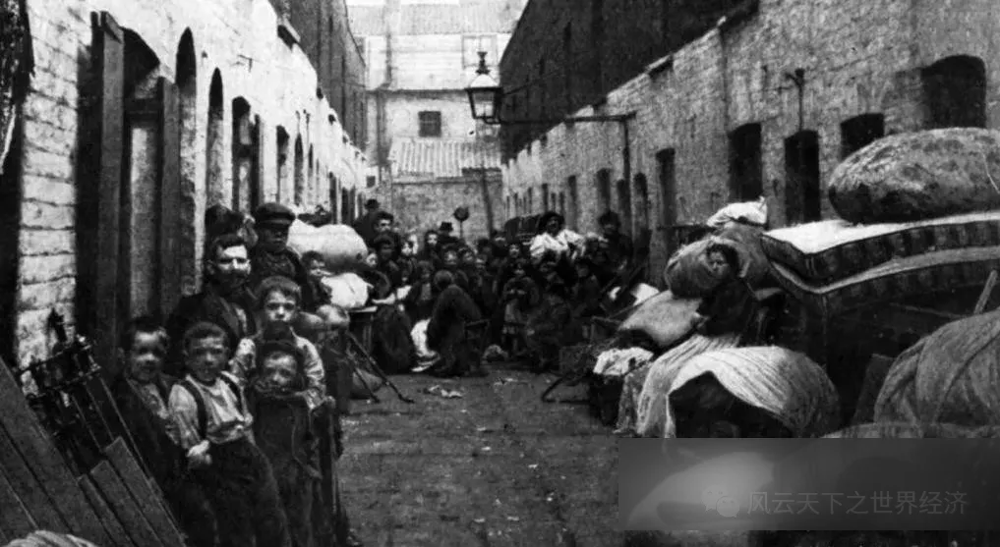
伦敦贫民窟
随着工业革命的进一步深化，恶劣的工作条件、贫民窟的生活和缺乏政府干预进一步恶化了工人的工作环境；工人平均寿命不足40岁，霍乱等瘟疫横行，在此基础上爆发了一次次的罢工活动。威廉姆·杰文斯在《大众的娱乐》中记载，当时普遍爆发的“暴动且恶意的集会活动”使得大多数集会都受到镇压，包括一些以艺术、娱乐为主的大众艺术节。根据他的描述，英格兰已经成为“乏味的英格兰”，而对于娱乐的镇压带来了最为致命的后果：由于工人缺乏合适娱乐活动，镇压引发了最为恶劣的消遣——酗酒与暴动。更为讽刺的是，工人运动带来的工资上升与工时减少更加恶化了境况——前者为烈酒的消费提供了基础，而后者则加大了工人在这些不合适活动中的投入。所以与其放任形势恶化，不如为大众提供合适且高尚的娱乐方式——比如音乐，正如前文所讲，它可以帮助宣泄热烈的情绪，带来心灵的平静和愉悦，从而帮助大众得到真正的闲暇；这不仅有利于平复工人运动，更重要的是可以帮助工人休养生息，提高工作效率。
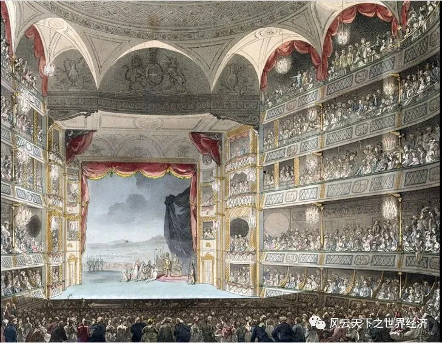
特鲁里街皇家歌剧院（1808年内景）
三、慷慨的西方与奢侈的东方——论达芬奇与波臣派
美第奇家族成就了我，同时也毁灭了我。——达芬奇
为什么工业革命没有出现在东方？或许在回答这个问题之前，应该把目光再拉长一些，为什么启蒙运动没有发生在东方？再试着把目光放远一点，为什么文艺复兴没有发生在东方？好了，我们把目光聚集在这里；接下来，我们将从艺术的角度来探讨，为什么，达芬奇，出现在了西方而不是东方？
在回答这个问题之前，先来简单看一下达芬奇时代西方的政治经济环境——尤其是经济环境（当然议会制也是佛罗伦萨诞生文艺复兴的关键所在，但经济最终影响了政治，这点在后续说明）。与靠海上贸易致富发家的威尼斯不同，佛罗伦萨的繁荣是建立在银行业与毛纺织业为基础的；贸易组织的创新与会计记账方式改革为银行业的发展提供了得天独厚的优渥条件，而教皇与神圣罗马帝国的长期斗争又为这些银行家们提供了肆意生长的沃土；银行家作为资本的持有者，其功能远非处理、兑换货币，他们从事商业投资，参与工业活动，在佛罗伦萨，银行家们通过购置羊毛进而加工成精美的布料与欧洲各国贸易。
但不幸的是，商业与加工制造业非常依赖稳定的外部条件，因而不确定性对于佛罗伦萨来说可谓是阿喀琉斯之踵；而14世纪黑死病的泛滥对于毛纺织业带来了致命的重创——仅在1348年一年时间，佛罗伦萨损失了将近40%的人口，同时瘟疫的肆虐也带来了需求端的不确定性，至1380年，布匹加工业已降到了不足瘟疫前的四分之一。
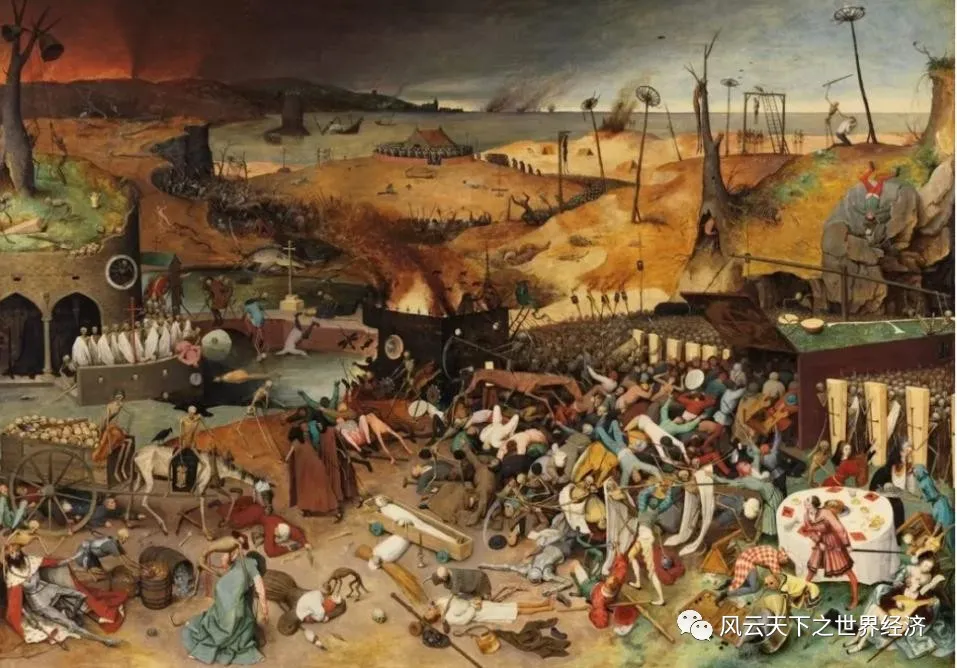
老彼得·勃鲁盖尔《死亡的胜利》(约1562年)
但击垮一个帝国的永远不是瘟疫、灾难或是财政问题，这些只是导火索，战争往往才是帝国们的行刑者——包括那些非本土战争。
我们把目光在拉远一些，在1066年诺曼征服以后，英法这对冤家便开始了他们长达数百年的爱恨情仇史，在1337年，基于对弗兰德地区的争端，并且伴随着皇室的纠葛，英法拉开了百年战争的帷幕；而战争的本质实则为资本的消耗战，法国对于弗兰德地区的恶意侵占使得爱德华三世禁止向该地区出口羊毛——但羊毛毕竟是英国的重要出口产品，如果与织物制造大户弗兰德终止交易，对英国而言亦是一笔失败的交易；所以，聪明的爱德华三世把目光投向了佛罗伦萨，那里聚集着当时欧洲最富有的银行家们，以及他们得意的产业，毛纺织业。于是，爱德华三世以羊毛作为抵押物，从佛罗伦萨的老牌银行家族贷款，已支付高额的战争开支，并缓解国内经济压力。但是金融行业总是存在风险，当贷款人无力偿还时，总需要一个强力的第三方辅助执行——但能强制爱德华三世执行还款的，欧洲大陆怕是不多见吧！查理五世的大胜意味着巴尔迪家族以及佩尔茨家族投资的彻底失败，爱德华三世的老赖行为彻底终结了这些银行家的神话——老王的垂暮必伴生着新王的崛起，美第奇家族借机掌控了佛罗伦萨银行行会——这带来了繁荣的必要条件，政治资本。
而此后的事情无须多言，文艺复兴的教父、美第奇家族的掌权者们，为了进一步提升政治地位（具体是宗教地位，毕竟基督教唾弃以贷款牟利的丑恶银行资本家），同时使得自己的银行业务开展的心安理得（但实际上他们也没有直接放贷，而是运用一套非常精密的汇票制度，用“盈利亏损”来掩盖利息，即将利息包含在汇票成本里。美第奇银行的各个分支也按照这个模式运营，看起来只是在搞收费业务，而非放贷），乔凡尼兴修大教堂，建孤儿院；科西莫大力投资佛罗伦萨的城市建筑设施，兴建图书馆，收集艺术展品；而洛伦佐更是拉开了文艺复兴的大幕——包括波提切利、达芬奇和米开朗琪罗在内的一大批艺术家在美第奇宫殿开启了自己的艺术生涯。而达芬奇等人的工作不仅唤起了人性的思考，开启了启蒙的思潮；更重要的是，以达芬奇为首的一系列艺术家，同时还兼任了科学家的职责：达芬奇不多赘述，先于他时代的画家皮耶罗·德拉·弗朗西斯卡更是一位数学家、几何学家；洛伦佐·吉贝尔蒂虽然主修雕塑，但仍热衷于视线与光学理论；阿尔布雷特·丢勒著有《人体的解剖学原理》...可以说文艺复兴的佛罗伦萨对于三百年后工业革命有着至关重要的作用。
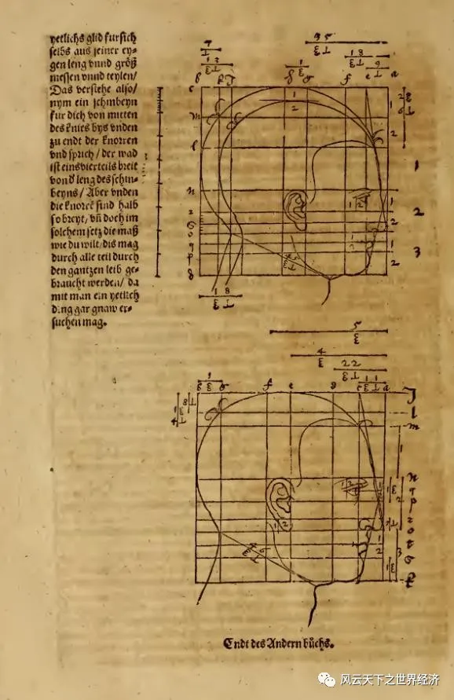
丢勒《人体解剖学原理》部分节选（1528年）
后世评论文艺复兴，总是对于美第奇家族不吝赞颂，往往对他们的历代瓢把子们冠以慷慨之称，究其原因，无非是兴修教堂、投资艺术，开启了复兴先河；但是反观中国，在同一时代，不仅没有出现文艺复兴，对于那些类似于美第奇的商界大鳄们，往往处于轻蔑的姿态予以评价——骄奢淫逸，但是，这些中国的暴发户们也是兴修祠堂、收藏字画、刻雕留像，也不比欧洲人差到哪里去，那为什么中国就没有顺着发生文艺复兴呢？难道是中国的商人们不够有钱？或者是格局不够大吗？
这个观点肯定站不住脚，毕竟君不见郑氏家族掌控台湾，制霸东海，甚至还搞出了个明郑朝？对于此，我们首先回到五百年前，1567年。
史载隆庆元年（1567年）2月4日，明穆宗登基未满足月，诏告群臣：“先朝政令有不便者，可奏言予以修改。”福建巡抚都御史涂泽民上书曰“请开市舶，易私贩为公贩”穆宗当下批复，解除海禁，调整海外贸易政策，允许民间私人远贩东西二洋，史称“隆庆开关”。
同时，距离圣玛利亚号抵达巴哈马已经过去70年之久，西班牙、葡萄牙等欧洲新贵们已经在美洲积蓄了相当可观数量的白银——历史就是这么讽刺，嗷嗷待哺的欧洲佬们好不容易发现了大银矿，又正好碰上隆庆开关，这笔意外之财终是找到了它的归宿。艾儒略在《西方问答》中记载“西来诸商，与贵国交易，每岁金银不下百万...敝地多受金银之害，金银愈多，而货愈贵。”；根据万明的研究，在隆庆五年（1571年）马尼拉大帆船贸易兴起到崇祯十七年（1644年）明朝灭亡的这七十多年里，通过马尼拉一线输入中国的白银多达7620吨。这种大规模的白银流动带动了整个东南亚贸易，使中国像一个巨大的旋涡，吸引其他贸易路线的白银向中国流动。比如当时从美洲运往欧洲的白银也辗转输入亚洲，其中大部分进入了中国：弘治六年（1493年）到万历二十八年（1600年），世界银产量2.3万吨，美洲产量占了70%以上，贡德·弗兰克认为，其中至少有一半的白银流入了中国。这不仅成为了欧洲后来价格革命的导火索，同时也为后来金本位转换埋下了伏笔——毕竟金本位是压垮清王朝财政的最后一根稻草，但始作俑者白银竟是明王朝续命的良药。
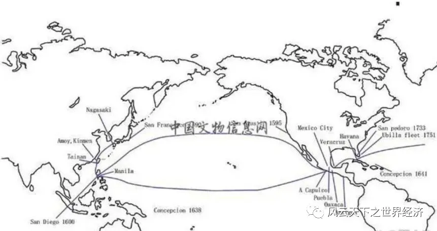
马尼拉大帆船航线示意图
清王朝的兴衰按下不表，明王朝开关以来，大量的白银涌入中国，属实造就了一大批富商，郑氏家族便是其中之一；而白银的大量内流，使得国内的商业资本也日趋活跃，后世鼎鼎有名的徽商便是在这一时期发展壮大起来的；同时经济的繁荣带动了城市化的兴起，资本主义萌芽，可以说同时期的中国也完全有着可以和佛罗伦萨媲美的环境——有些地方甚至超过了佛罗伦萨。
那为什么文艺复兴就没有发生在中国呢？当然最根本的原因是政治制度，先简单聊一下这个。首先福建月港开关本身只是明王朝为应对困窘局面而不得已进行的一次局部性的试验。只有广东和福建两省地方的私人海外贸易获得了合法身份，其中广东明面上始终禁止私人出海贸易，其他沿海地区也仍处于禁海状态。其次，官员贪腐亦是掣肘商人的一大弊病，“官坏而吏仍肥，饷亏而书悉饱”万历年间曾出任福建税监的高宷便是贪腐队伍中的“翘楚”。他在任期间大肆搜刮财物异宝，强行征派各种的税款，一人便使许多海商面临破产。最后，明王朝对参与对外贸易的商人从无任何保护。万历三十一年（1603年）西班牙人在马尼拉大规模屠杀华人，朝廷对此没有采取救助措施，反而以其为“弃民”，称“商贾中弃家游海，压冬不回，父兄亲戚，共所不齿，弃之无所可惜，兵之反以劳师”。
这就导致了明朝商人始终难以占据主流地位，而身为末流的附庸品，商人们纵使像美第奇家族一样投资庙宇，兴建祠堂，收购字画，但始终不能按照自己的喜好进行改组，必须要在满足官方正统审美的情形下发展艺术；而官方正统审美自宋代以来，写意画流行，相较于工笔画（崇尚写实，求形似），仕子们更热衷于写意山水，那么工笔画的地位自然就大大降低；而明中后期，士大夫们更懒得画工笔，大多笔墨文章，淋漓写意去了。那时节，画肖像的，更是处于工笔画的底端，且若是过于写实，会被认为不摹古，匠气太浓，不够艺术。
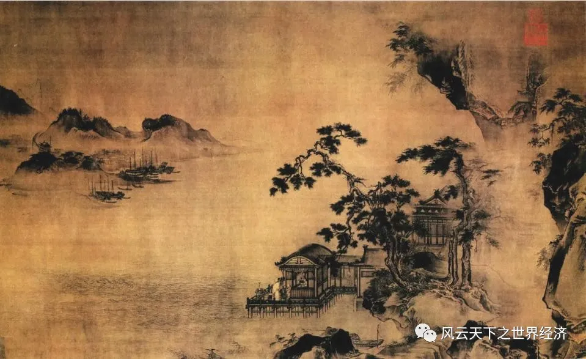
明代王谔《江阁远眺图》
反观佛罗伦萨，首先美第奇家族掌控了市议会，他们的审美就代表了官方的审美；其次，相较于风景画，欧洲权贵们热衷于画肖像，以便于留名后世，那么写实就成了唯一要求；文艺复兴三杰中，据说达芬奇是自己画人，徒弟画风景，而米开朗基罗更是声称“我不画风景与静物，那是缺乏才华不能画人的家伙才画的”，而拉斐尔更是凭借高超的肖像画技巧，纵横整个梵蒂冈宫廷。
而写实的基础便是搞清楚透视、光影原理——这要涉及数学和光学物理；其次便是人体架构——所以达芬奇才会如此热衷于解刨尸体，这又促进了医学的研究；而针对数学、物理与医学的研究无疑为后世科学进一步的发展提供了坚实的基础，更重要的是，相较于艺术，这些理工科的知识更依赖于理性的思维，所以说文艺复兴虽复兴的是文艺，但受益的却是科学。
但是中国古代艺术就没有写实的吗？有的，更巧的是就出现在明中晚期，隆庆开关之后；这便是波臣派画家。波臣派开宗人是曾鲸，字波臣，其作品注重写实，尤其是对于肖像画，周积寅评价其画作：“与传统画法相同的是同样用淡墨线勾出轮廓和五官部位，强调骨法用笔；与传统画法不同的，不是用粉彩渲染，而是用淡墨渲染出阴影凹凸”；但是其始终只是一介匠人，肖像画再出色，也难登大雅之堂，故虽然波臣派画作在民间流传甚广，《国朝画征录》中记载“波臣授徒甚众其中出类拔萃者，谢彬为‘传神妙手’；莆田郭巩，山阴徐易，华亮沈韶，汀洲刘祥生，嘉兴张瑜，海盐张远，秀水沈纪…等皆不问妍媸 老幼，靡不神肖。”但这毕竟不是官方认证的艺术，只是被认作与木匠、瓦匠等无差的技艺，故难以进一步发展，对于基础科学的研究也就止步于此了。
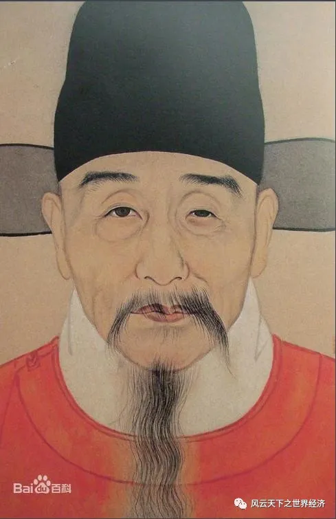
《明十二人像》(刘宪宠)，作者不详
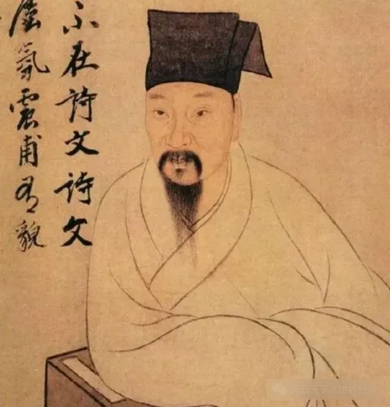
明代曾鲸《葛一龙像》(局部)
于是，站在后世的角度，我们常常评价美第奇家族对于艺术的慷慨，却一致认同明商的庸俗——建祠堂是为了延续香火，修庙宇是为了求得保佑，收藏字画便是附庸风雅，兴修老宅、养艺人便是骄奢淫逸——虽然这里面有些行为评价难以不给予赞同，但是如果，我是说如果，明商们真的搞起来了物理、数学、生物学的研究，后人会不会对其大颂赞歌“近代中国文明的先河”、“理性启蒙”？
四、回归本源——艺术、政策与国际贸易
英国和美国是被同一种语言区分开的两个国家。——萧伯纳
高贵的昂撒人绝对没有想到，废除《谷物法》将造成什么样的后果。1846年，伴随着《谷物法撤销案》的决议通过，这不仅标志着工业资产阶级通过议会改革彻底将地主排挤出了政治的舞台，更是威胁到了旧贵族们的生存、生理上的生存——毕竟《谷物法》是为了保护地主利益，承载着守住他们最后一个饭碗的希望。资产阶级搞破了地主们的铁饭碗，而高贵的贵族老爷们又看不起新兴的工业资产阶级，除了少部分愿意融入他们以外，大批的地主濒临破产的边缘；而自1285年《限定继承法》颁布以来，英国以法律的形式对贵族的财产转让行为进行约束，即“永业”，这样一来贵族地产主不仅可以控制当世的土地权益，也可以对土地的未来权益予以把控，以实现家产世代永久传承下去的愿望，成为永业产生与发展的源源不竭的动力；更重要的是，“永业”带来责任有助于巩固他们对待财产始终如一的态度以及公正的美德。
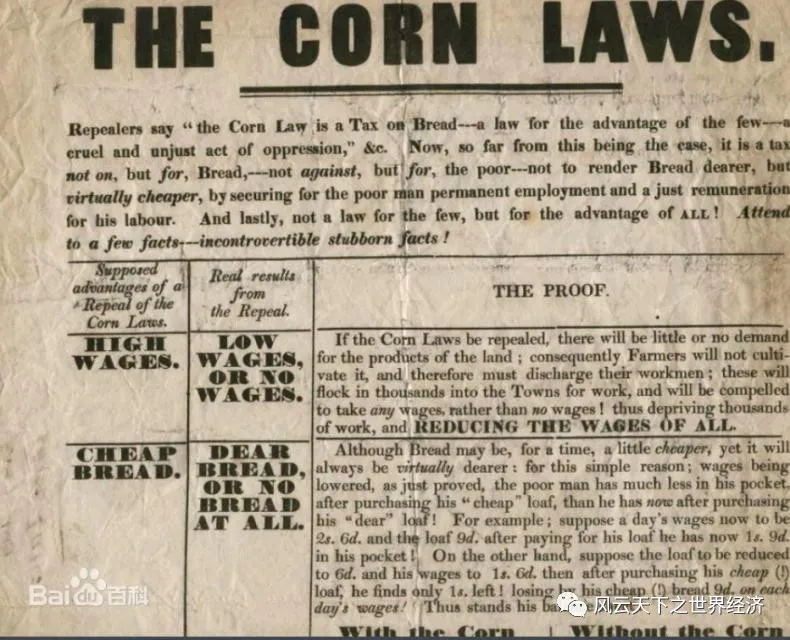
谷物法
地主们毕竟要生存；更重要的是，产权的永久制不利于资产阶级的进一步发展；所以，在《谷物法》被废除以后，1882年，土地法案修改，其首次允许地主家庭在一定条件下可以变卖土地和祖传遗产。这一规定为许多家庭带来了应急收入，但同时也标志着土地使用性以及权威性的下降，映射了贵族们道德水平的降低——毕竟典当家产是败家子的招牌行为。接着，作为一系列遗产税修正法案之一，1894年财政法案规定分等级征收遗产税，这是对旧有遗产税的一项重大改革；而相较于复杂的旧有税制，新的税制简单明了，即分不同价值征收累进税。这不仅为处置财产的行为进行了合法化，更是简化了处置流程；而带来的最大影响自是土地产权的流转，但是，艺术品，同样作为家族的“遗产”，也被列入了交易的白名单。
直到1915年，500多件15世纪到18世纪的欧洲绘画在短短的四分之一世纪里纷纷离开英国本土，地主们在法律许可和经济刺激的双重动因下，变卖了大批量的绘画艺术品——毕竟，那些一直在家里堆着吃灰的玩意突然成了纸黄金，而且是法律许可的纸黄金，这对地主们来说也太刺激了。这里举两个例子，一个是伦勃朗的《磨坊》，一个是荷尔拜因的《丹麦的克里斯蒂娜》——前者不幸流失海外，但激起了民众的请愿，终是在最后一刻，通过众筹利用伦敦美术馆挽回了后者。
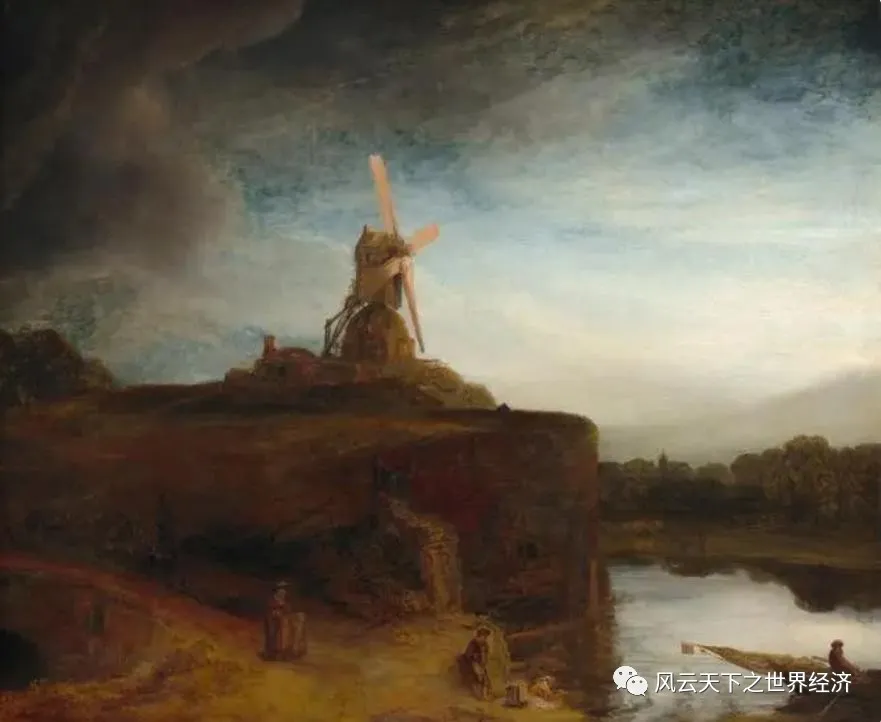
伦勃朗《磨坊》
1911年，英国国家美术馆成立了一个专门的委员会，专门处理艺术品交易问题；但财产权力要得到尊重，也就是绘画品交易不应该受到限制，与此同时，国家应该提供足够的资金在艺术品拍卖会上，购买绘画作品，防止流失海外；而这一部分资金便由遗产税来提供。
故事讲到这里，需要小小暂停一下，毕竟英国人似乎对于绘画作品的拍卖反应过于激烈了，他们似乎没有什么恰当的理由去阻止、修正它；但是，考虑到我们在第一节所讨论的，艺术的教化作用，它可以改善人类的道德品质与行为规范，并为欣赏者带来精神的愉悦与放松，而这些正是当时英国所急需的。在18世纪30年代，伦敦的特拉法尔广场被选定为国家美术馆的新址，以便穷人们能够从伦敦东区步行到达，而西区的富人则可以驱车前往；到了1857年，空气污染对于绘画的影响引起了关注，人们提议将收藏品移到皇家居住的肯辛顿，那里的空气相对更清新一些；但法官科勒律治反对这样的做法，因为这样会对穷人们的参观带来更大困难，他坚持认为穷人需要艺术，“以净化他们的品味，是他们戒除败坏低劣的习气”；直到2002年，国家美术馆馆长麦克格雷仍赞成人们免费参观公共收藏，因为他相信这可以增进社会凝聚力，其通过承载的人类的共情力加强了富人和穷人间的联系。
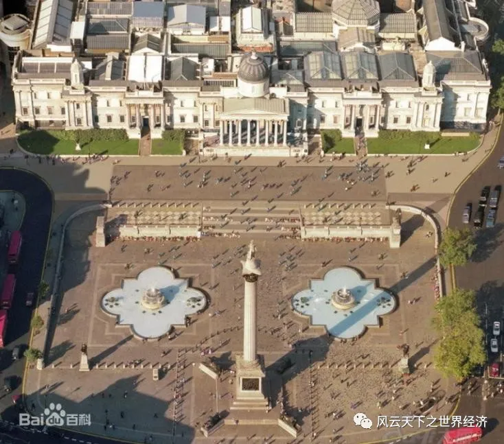
英国国家美术馆
而当1882年英国允许交易艺术品，同为昂撒人的美国人——这群英国人民的好兄弟，又在干什么呢？
在1882年之前，水深火热的美国人民刚刚结束长达5年的南北内战，而战争带来的冲击并非政治上的，经济上的更为显著：远在1816年，联邦政府颁布《关税法案》，对大麻布、帆布及铜铁等金属制品成品征收20%的关税，对棉花和羊毛制品征收25%的关税。1824年的《关税法案》将进口关税在之前的基础上提高到了30%，并新增了70种产品目录。到1828年，所谓“可恶关税法”更是将羊毛制品的关税率提高到了40%。而南方作为原材料的产出端以及工业制品的需求端，高的关税只能迫使他们购买劣质的北方产品；1861年颁布的《莫里尔关税法》进一步恶化了南北关系；但南北战争北方的胜利意味着高关税的延续，贸易保护主义抬头，战争造就了一批富有的群体，而收入的再分配也有着隐含的意味：战争暴发户热衷于购买艺术品，这无异于扩大了对于海外艺术品进口的需求。在1890年，关税法案重新修订，法案中大部分进口商品的税率都有所提高——体现了高度的保护主义，但是艺术品确是例外，税率减少了一半——从价税由30%降到了15%；1894年，艺术品零关税政策实施；后续几经沉浮，但始终低于修正案前的水平。
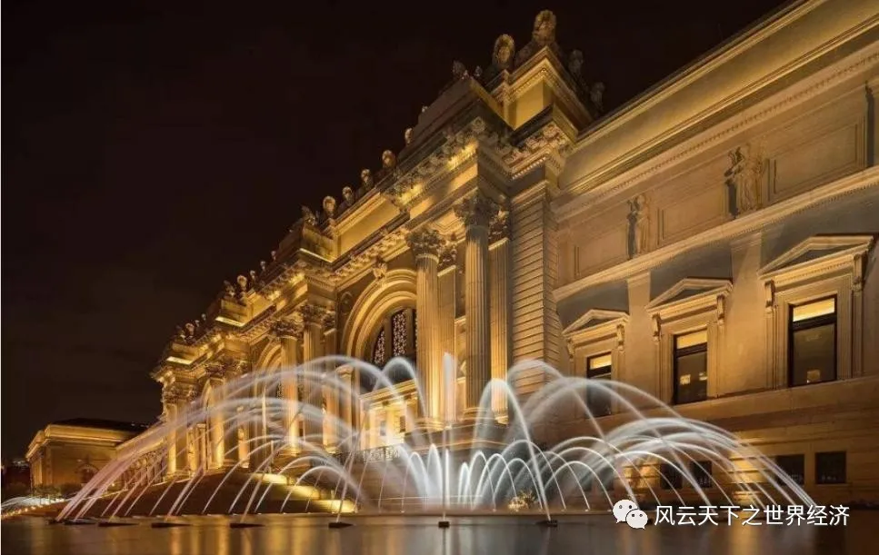
纽约大都会博物馆
这里需要注意的是，19世纪70年代，纽约大都会艺术博物馆、波士顿艺术博物馆以及芝加哥艺术协会相继建立；为了丰富博物馆的收藏，美国的百万富翁们发动了一场奢侈的购物狂欢，从欧洲运回了大量的艺术品。他们认为，艺术馆能够作为社会团结和民主力量的发挥作用，以减缓由于罢工以及工人暴动（毕竟芝加哥在1886年可是带来了五月的唯一假期）带来的恐惧，并且能够引导居民追求超越物质层面的生活，减少犯罪的发生，从而改变美国城市面貌。
针对美国人这“趁火打劫”的行径，罗杰·弗莱评论道“美国也被卷入这令人困扰的问题中，但美国无疑最聪明的···英国人对这些富豪的占有欲表示出极度的愤恨，这也是情有可原的，但理智地说，没有人否认，这些富豪凭借其强大的实力，事实上是在为他们的祖国效力。”；但大多数英国人则表示出强烈的愤慨，麦克科尔表示“那些国家（比如美国）的财富已经达到了罪恶的程度，他们将大笔的钱财用于购买我们国宝级珍品”，对于亨利·詹姆斯而言，1895年是“杰克夫人的时代”，他形容美国人为“噩梦的制造者”，并把美国人与那些站在罗马城门下的野蛮人作对比。
五、重回毕加索——艺术、经济与未来
故事讲到这里基本就结束了，还是允许我进行一个小小的总结。在史前毕加索与现代毕加索会晤前的三万年间，艺术利用其情感载体的身份，伴随着人类走过了古希腊、带来了文艺复兴，并在经济飞速发展的时代从不同方面修正并促进了社会的发展，在某种意义上“使得人类生活得更好”；经济史探究的是经济的增长、科技的发展、生产力的变革以及人类的发展，但除了那些我们看得到物质层次的丰裕，或许精神层面的发展也是值得探究的一个层面，毕竟，当我们讨论农业革命，谷物对于人类的驯化似乎是一个绕不过去的悲观论断。